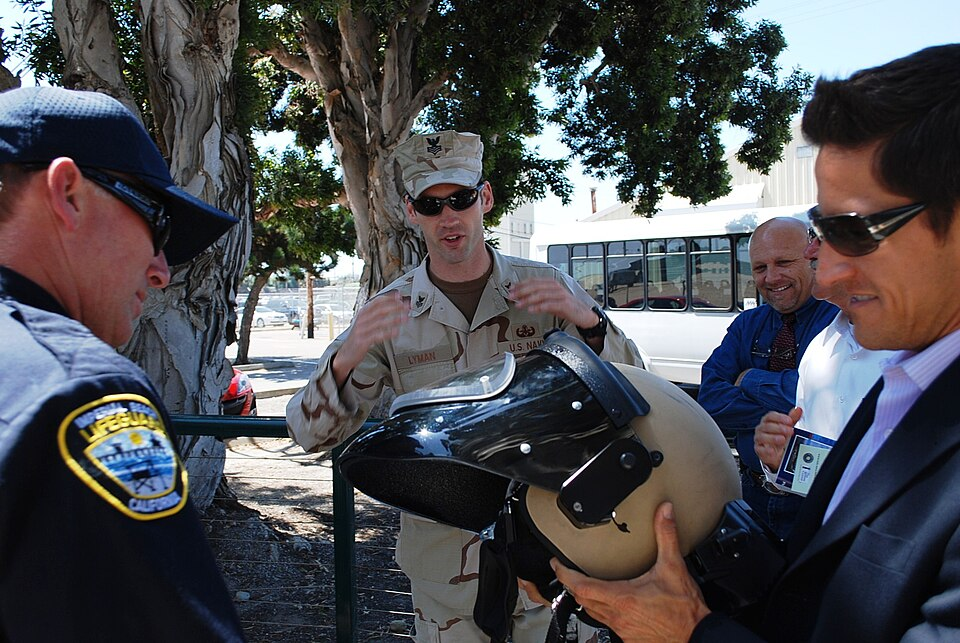
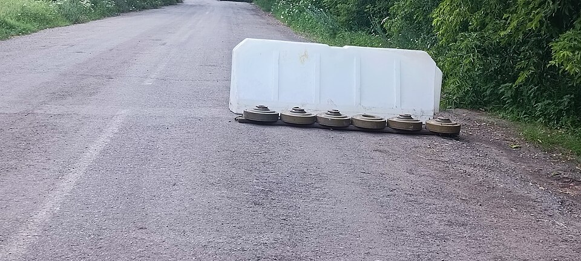
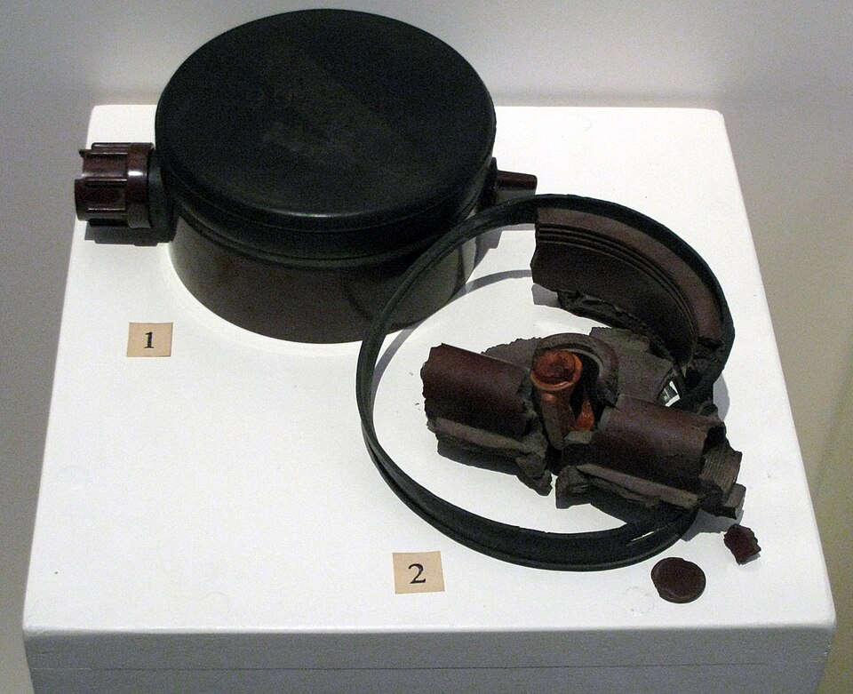
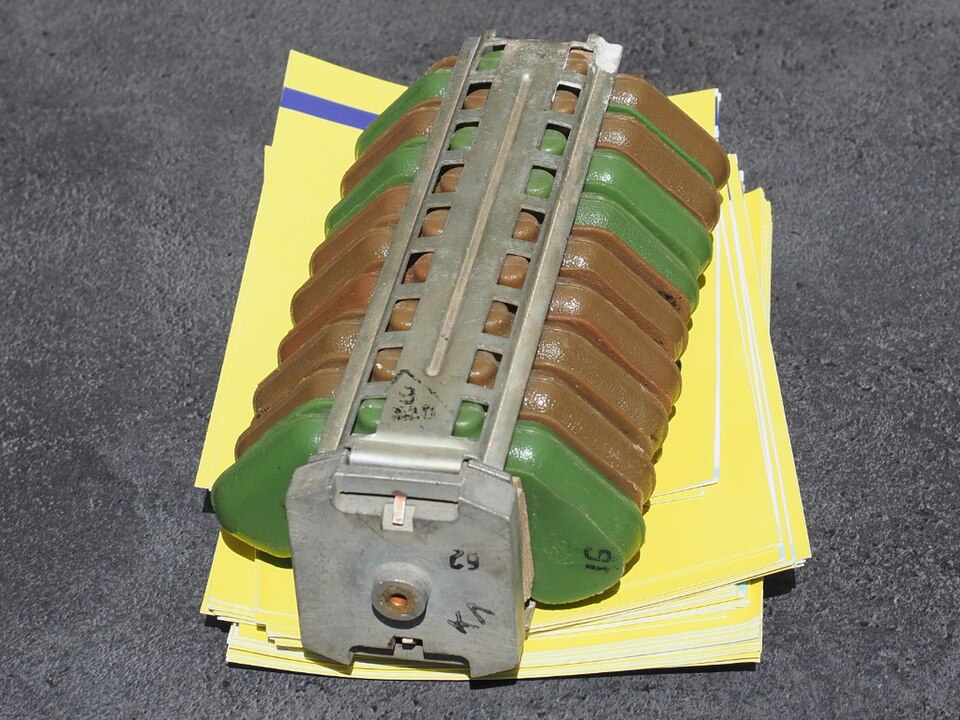
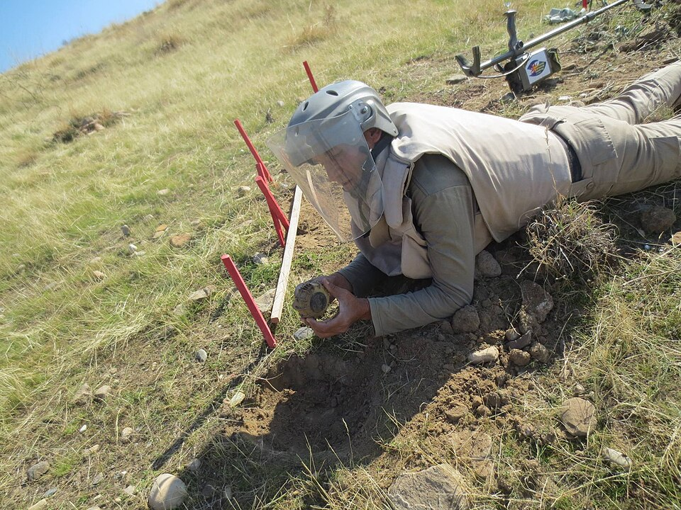
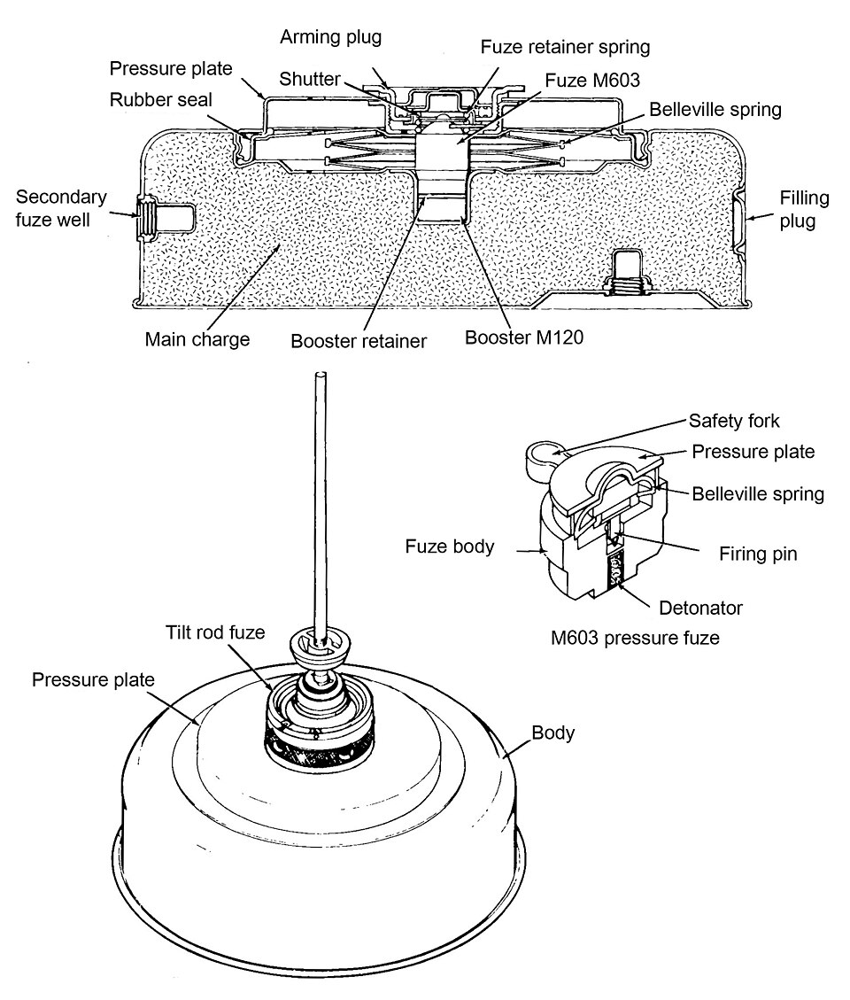
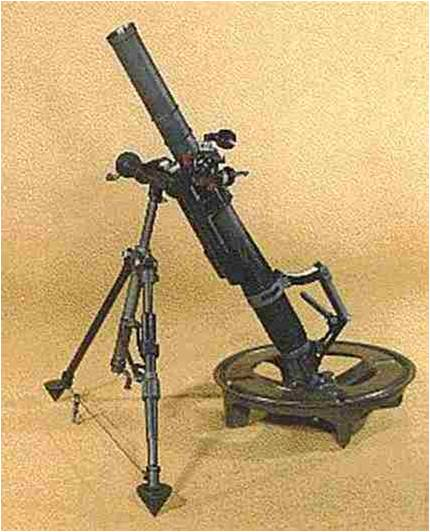
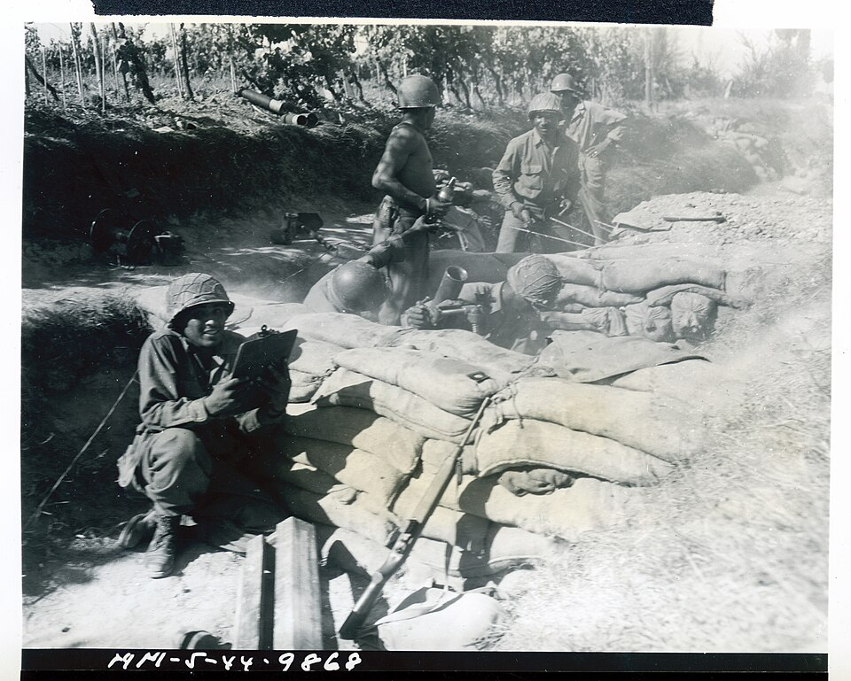
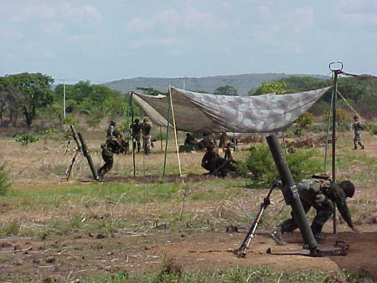

EOD 1+2+3 מקטע D
קורס ומבחן בשלושה שלבים. הנבחן מבצע את שלושתם, והממשק מציג ציון לכל שלב בנפרד: EOD 1, EOD 2, EOD 3, וכן ממוצע 1+2+3. ציון עובר: 70.
🛠️ הערות למפתח (Beta — הרצת ניסיון)
זיהוי נבחן
הזיהוי נעשה לפי ?uid=... בקישור או הזנה ידנית. מיפוי uid לאדם מנוהל מקומית על ידי יקיר מחוץ לקורס. הקורס אינו שולף נתונים אוטומטית ממאגר עובדים.
🛠️ הערות למפתח (Beta — הרצת ניסיון)
מאגר תמונות חזותי (בטא)
תמונות להמחשה לימודית בלבד. כל תמונה עם מקור ורישיון. אין להסתמך על תמונה במקום נוהל, הסמכה או מקור מחייב.
חליפת מיגון / EOD

רישיון: Public domain · מקור: Wikimedia Commons / U.S. Navy
מוקשים — דוגמאות ויזואליות

רישיון: CC BY-SA 4.0 · מקור: Wikimedia Commons / Mil.gov.ua

רישיון: CC BY-SA 3.0 · מקור: Wikimedia Commons

רישיון: CC BY-SA 3.0 · מקור: Wikimedia Commons

רישיון: CC BY 4.0 · מקור: Wikimedia Commons / Sean Sutton, MAG

רישיון: Public domain · מקור: Wikimedia Commons / U.S. Army
מרגמות — דוגמאות ויזואליות

רישיון: CC BY-SA 3.0 · מקור: Wikimedia Commons

רישיון: Public domain · מקור: Wikimedia Commons / U.S. Army Signal Corps

רישיון: CC BY-SA 4.0 · מקור: Wikimedia Commons
🛠️ הערות למפתח (Beta — הרצת ניסיון)
תוכן עניינים וציונים
| שלב | ציון | סטטוס | קישור |
|---|
🛠️ הערות למפתח (Beta — הרצת ניסיון)
🎮 משחק ההסמכה — EOD 1+2+3
שאלה אחת בכל מסך, משוב מיידי עם הסבר ומקור, בלי שעון ובלי לחץ. צוברים נקודות ורצפים 🔥. הציון נשמר למערכת הרגילה (עובר: 70).
📖 מצב קלאסי — לימוד ומבחן בטופס
עמידה בתקן והצמדה לדרישות
מיפוי בין דרישות הקורס, המקורות והשלבים. זהו מנגנון בקרה לבטא — לא תחליף ל-QA מלא.
| דרישה | מקור/עיגון | איך נבדק בקורס | סטטוס |
|---|---|---|---|
| ציון לכל שלב בנפרד + ממוצע 1+2+3 | הנחיית יקיר 25.11.2026 | מנוע ציון מציג EOD1/2/3 וממוצע | ממומש |
| ציון עובר 70 | הנחיית יקיר 25.11.2026 | PASS=70, סטטוס לכל שלב וממוצע | ממומש |
| EOD רמה 1 — השמדה במקום של פריטים ספציפיים שאושרו | IMAS 09.30 4.2(1) | 13 מודולי לימוד + 25 שאלות | עשיר בטא, דורש QA ידני |
| EOD רמה 2 — הזזה/הובלה באישור כתוב מרמה 3+, פינוי מרובה | IMAS 09.30 4.2(2) | 12 מודולי לימוד + 25 שאלות | עשיר בטא, דורש QA ידני |
| EOD רמה 3 — RSP/הרס עד 50kg NEQ, אישור לרמה 2 | IMAS 09.30 4.2(3) | 12 מודולי לימוד + 25 שאלות | עשיר בטא, דורש QA ידני |
| קטגוריות כשירות EOD | T&EP 09.30/01/2022 פרק 6 + Annex B | מפת כשירויות/מודולי לימוד בכל שלב; Annex B דורש QA שורה-שורה | חלקי, דורש QA ידני |
| הערות למפתח בכל דף | הנחיית יקיר 25.11.2026 | devnote בכל כרטיס/שלב | ממומש |
| שמירה מקומית + ייצוא | דרישת קורס | localStorage + הורדת JSON | ממומש |
| פרסום בענן, איסוף למאגר מקומי וסגירת קישור | הנחיית יקיר 25.11.2026 | publish_exam.py / collect_exam.py + הוראות | מנגנון מוכן, דורש הרצה בפועל |
🛠️ הערות למפתח (Beta — הרצת ניסיון)
שמירה, ייצוא והגשה
התוצאות נשמרות בדפדפן (localStorage). אפשר להוריד JSON. בפרסום בענן: הנבחן פותח קישור, מסיים, והתוצאה נשמרת/מועתקת למאגר המקומי של יקיר; לאחר מכן הקישור נסגר על ידי סקריפט האיסוף/פרסום.
דוח מנהל מקומי
מציג תוצאות שנשמרו בדפדפן זה בלבד. דוח מרכזי נאסף למחשב של יקיר דרך collect_exam.py.